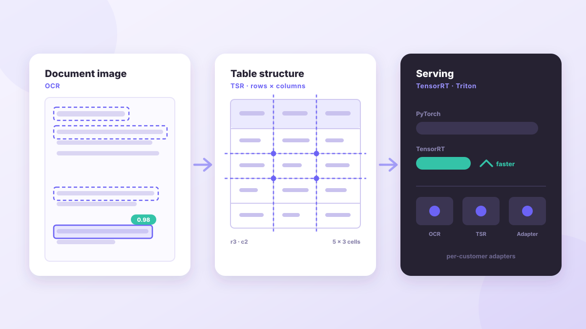
2023.10 — Present
Document Understanding Model Development
OCR model training & dataset quality improvement, user-specific adapter, inference optimization with TensorRT/Triton, Table Structure Recognition (TSR).
AI Developer · JiranJigyoSoft
Building intelligent document AI systems — OCR, RAG, document parsing, and watermarking from research to production.
ScrollAbout

AI researcher and developer at JiranJigyoSoft, working on document understanding, OCR, and Large Language Models. I'm passionate about applying NLP and Vision Language Models to real-world document AI problems.
Experience
AI R&D focused on document intelligence: OCR, Table Structure Recognition, RAG, document parsing, and invisible image watermarking.
Academic Projects
Developed a pig farm status-board OCR system, won a DACON competition award, and presented a first-author paper at the KKITS 2023 Spring Conference.
Education
GPA 4.036 / 4.5
JiranJigyoSoft Projects

OCR model training & dataset quality improvement, user-specific adapter, inference optimization with TensorRT/Triton, Table Structure Recognition (TSR).
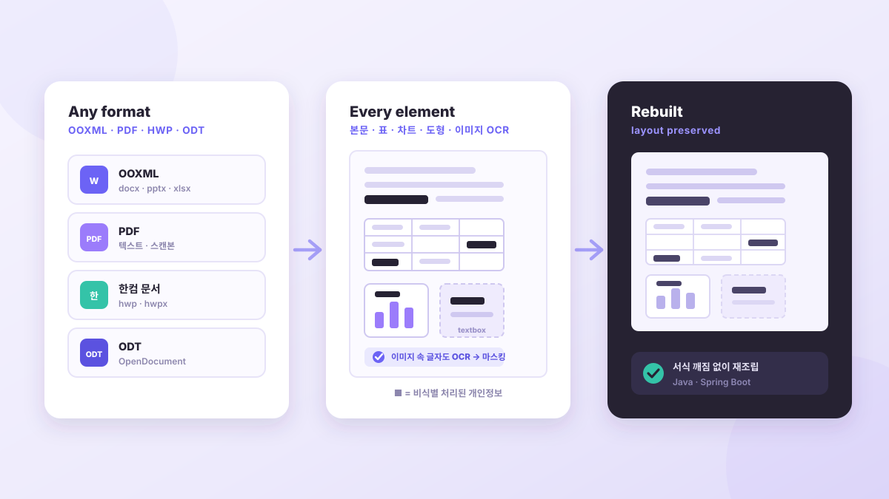
Format-specific parsing for OOXML, PDF, Hancom Docs, and ODT, with OCR/Regex de-identification and layout-preserving reconstruction.
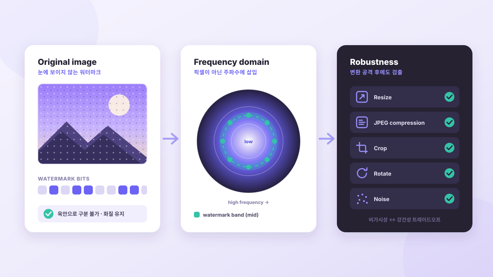
Frequency-domain watermarking with robustness against image transformation attacks.
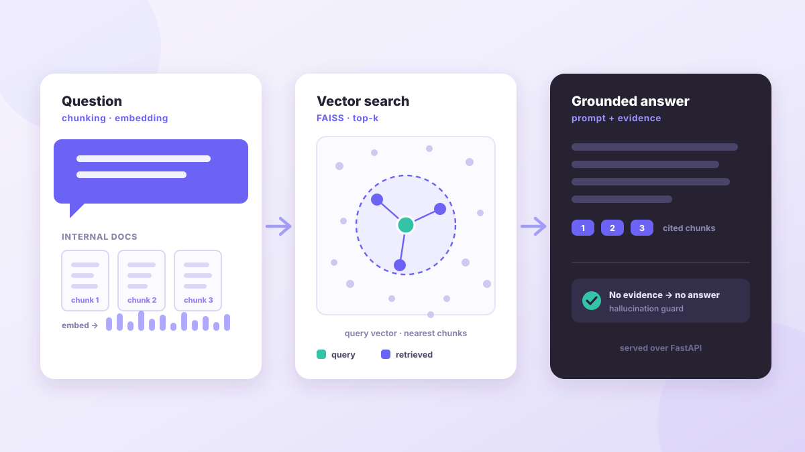
RAG pipeline for internal PDFs using Korean embeddings, ChromaDB/FAISS, MultiQuery Retriever, and similarity-search experiments.
Academic Projects

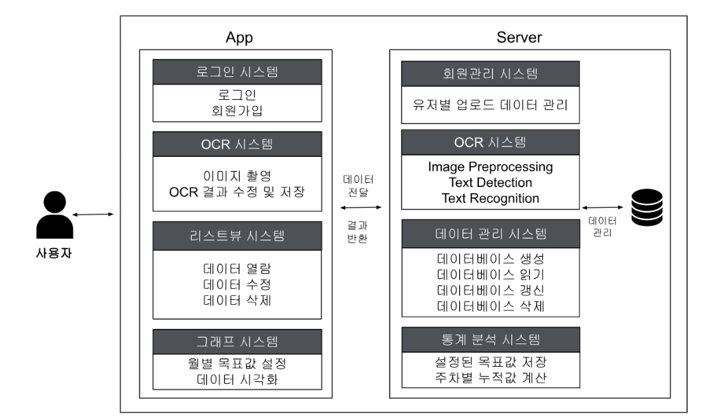
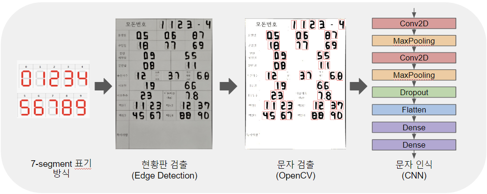
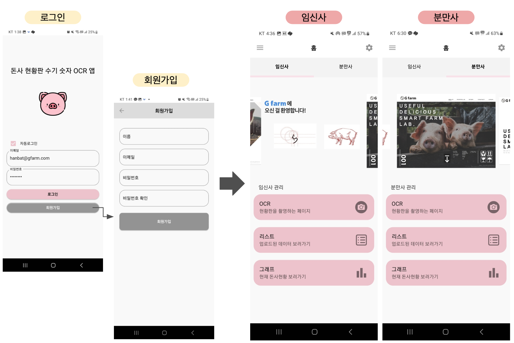
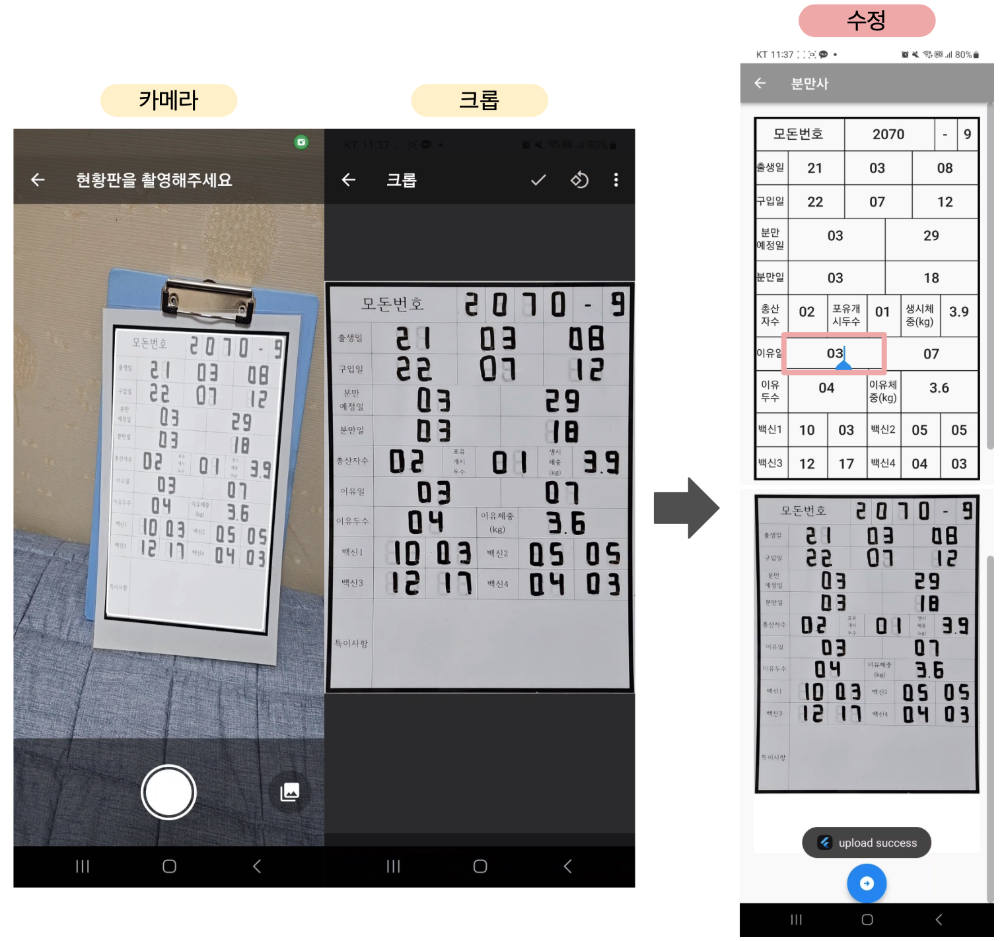
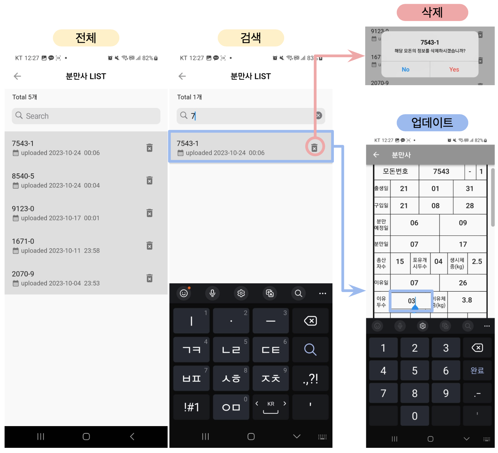
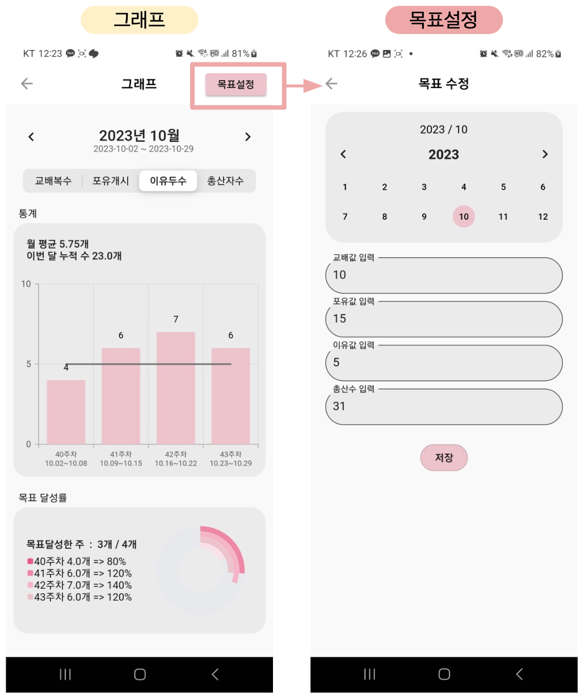
Algorithm to separate overlapping handwritten digit detection regions. Full-stack: server, backend, and Flutter app.
GitHub → Lab Project · Korean Paper
Lab Project · Korean Paper
Table detection and handwritten text recognition from pig farm boards using ArUco markers and OCR.
Competitions
 Excellence Award
Excellence Award
Building area segmentation from satellite imagery. Data preprocessing and semantic segmentation model training.
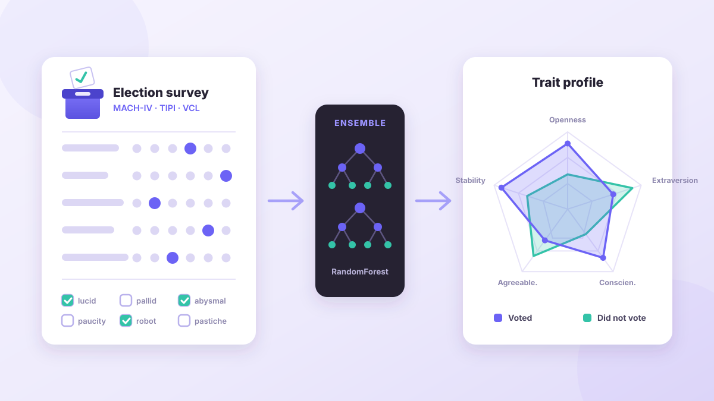
Ensemble algorithm to predict psychological tendencies from psychometric test data.
Publication
Development of an Application for Table Extraction and Handwritten Character Recognition on Pig Farm Status Boards Using ArUco Marker and OCR
A mobile application that uses ArUco markers to correct perspective and extract the table area from photographed pig farm status boards, then recognizes handwritten entries with OCR and digitizes them. The system reduces repetitive manual data entry and input errors in farm operations.
Skills
Contact
Interested in collaboration, research opportunities, or just want to chat about AI? Feel free to reach out anytime.